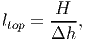
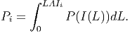
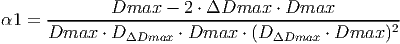

Model Description¶
1 Purpose
2 State variables and scales
3 Process overview and scheduling
4 Design concepts
5 Initialization
6 Input
7 Submodels
2 The Trees model
1 Model Description
The individual-based forest model structure is largely based on the FORMIND model (K�hler and Huth, 1998), following the description provided by Fischer et al. 2014 (see R�ger et al. (2007) for another version and application of FORMIND). Most of the equations used are based on the formulation detailed in the supplementary material of Fischer et al. (2014). When equations are identical, references are provided in squared brackets, indicating the equation number in that document (e.g., [eq. 15 in FMD], where FDM stands for FORMIND model description). A few significant changes were made to the FORMIND model structure and implementation, which are discussed in detail in sections 2 and 3 and also indicated in the appropriate submodel descriptions in section 1.7. The code that implements the model was rewritten in Python as an Object-Oriented, open-source module (See “Objected-Oriented implementation” below). The description in sections 1.1-1.7 follows the ODD protocol, proposed by Grimm et al. (2010).
1 Purpose
The Trees model is an individual-based, spatially explicit model developed to study the long-term impacts of logging and other forms of disturbance on tree abundances and distributions, carbon stocks and carbon sequestration in uneven-aged mixed species tropical forests.
2 State variables and scales
The model is implemented in three-dimensional space, and is grid and individual-based. Ecological processes are formulated in three organizational scales: trees, patches and landscape (table 2.1). Each tree is represented individually from birth to death. To enable the dynamics of species-rich forests to be simulated more efficiently, species with similar functional characteristics are grouped in plant functional types (PFTs). Groups are based on shade-tolerance and maximum height (however, single species can be represented just as easily). In addition, cohorts are an extra level that aggregate trees of the same age and PFT within a patch. However, this level is used for purely computational reasons and no attributes are accessible (see section 2.2.1 for more details on cohorts and section 2.3 for more details on PFTs).
Patches are squared cells with unique x and y coordinates and area equivalent to the crown area of a mature tree (parameter a in table 2.1). Patches are divided in small vertical layers (Δh in Table 2.1) that might have different light availability due to light diffusion and interception. Light availability is calculated for each layer, as well as the sum of leaf areas. Patches are linked to their neighbors since individual trees in one patch may fall into a neighboring patch. The landscape is the set of all patches organized in a rectangular grid with periodic boundaries. Forests are simulated in monthly time steps. The total period of time simulated can be decades or centuries, depending on the simulation goals. For the logging example given on section 2.4 the total time was 50 years because that exceeds the time that most sustainable logging operations wait to revisit a site CONAMA (2009).
3 Process overview and scheduling
Within each time-step (1 month) the model proceeds in the following order: re-calculation of light availability within the forest, growth and update of geometrical characteristics. Mortality and recruitment events occur once a year (every 12 time-steps), while logging events are executed as scheduled (the default is every 25 years).
Within each patch, all trees compete for light and space following a gap model. Light availability is assumed to be the main driver of tree growth and forest succession. For each patch, the light availability is calculated according to an extinction law that depends on the vertical distribution of the leaf area. Light availability is then determined for each tree. The same equation is used to calculate the light incidence at the soil level (section 2.1.7, submodel III). Annual growth is calculated based on the physiological processes of photosynthesis (section 2.1.7, submodels IV and V) and respiration (section 2.1.7, submodel VI). Growth is expressed as the monthly increment in aboveground biomass (section 2.1.7, submodel VII). Biomass acquisition is translated into DBH increment, which is used to update height, crown area and other geometrical attributes through allometric equations (section 2.1.7, submodel VIII). Tree mortality can occur either through self-thinning in dense patches, stochastic mortality, gap creation by large falling trees or logging (section 2.1.7, submodel II). Recruitment (section 2.1.7, submodel I) occurs when the light intensity at forest floor exceeds a PFT-specific threshold (parameter Iseed; see table 2.3). At the beginning of each year, a PFT-specific number of seeds (defined by parameter Nseed) is randomly distributed across all the patches. The effective recruitment rates for each PFT describes the number of seeds which met the minimum light and space criteria to grow over the DBH of 1 cm in each year. At the end of each year mortality events are executed sequentially. If logging operations are scheduled for that year, they occur after natural mortality events. Figure 2.1 illustrates the order in which submodels are executed.
4 Design concepts
- Emergence: Patch level state variables such as light availability at the ground level and vertical layers, as well as landscape level variables such as carbon stocks and net carbon exchange, depend on the abundance and spatial distribution of individual trees.
- Sensing: Individuals sense their size (biomass), which affects growth.
- Interactions: Trees in the same patch compete for light and space (self-thinning). Trees in different patches may interact when tall trees fall and damage smaller ones.
- Stochasticity: All mortality processes are described as probabilities. Seed dispersal can follow a random distribution depending on dispersal mode (uniform or power distribution).
- Collectives: Cohorts are collectives of trees with the same age and Functional Type which are located in the same patch. Trees in the same cohort have the same size.
- Observation: Observations can be made at the individual (Biomass, Leaf Area and any other individual attribute), population (Abundance, totals and summary statistics for any individual attribute) or landscape levels (Abundance per PFT, totals and summary statistics for any individual attribute, Net Carbon Exchange per year and total carbon stocks in soils, deadwood and living aboveground biomass). Outputs can be recorded hierarchically in a HDF5 database. Some plotting functions are also available for the most commonly used data.
5 Initialization
A simulation can be started with a treeless area, in which case a seed bank is generated by randomly distributing a predefined number of seeds (Nseed) across all patches. The total number of seeds is a PFT-specific parameter (Nseed) and a uniform distribution is used to determine the position of each seed in the grid. The model can also reconstruct an existing forest from a data file containing information about trees (position in space, id, age, DBH and the PFT to which they belong), the seed bank (how many seed of each PFT are available in the soil) and landscape level carbon stocks. This information can be generated by pausing and saving an ongoing simulation. To test different scenarios on a mature forest, a combination of the two features can be used in order to reduce computation times: starting from a clear area, the model runs for a long period (e.g., 300 years) and the resulting forest can be saved and used multiple times as the starting point of different scenarios that run for shorter periods of time (e.g., 50 years).
6 Input
The position and other attributes of all trees can be saved and used as an input, allowing simulations to be paused and continued. Other than that, no other inputs are used. Site conditions are assumed to be homogeneous and there is no inter-annual variability of environmental conditions.
7 Submodels
The submodels are summarized in figure 2.1.

- I.
- Recruitment
Seed dispersal can be implemented by two methods. The first (external seed rain) randomly places seeds across the entire landscape, using the Nseed parameter to determine the number for each PFT. The second (implicit seed dispersal) uses a power distribution to disperse the seeds around each tree, based on the fruits available. Each fruit is assumed to contain only one seed. The number of fruits for each tree is calculated by

(1) where DBH is the Diameter at Breast Height and afruits is an adjusting factor. Only trees with DBH above 10 cm produce fruits in this version. Chapter 3 describes a third dispersal method (explicit seed dispersal), in which fruits are eaten by explicitly modelled dispersers. In that case, a PFT specific parameter disgen determines what proportion of the fruits will be dispersed by the tree’s power function (referred to as generic dispersal in Chapter 3) and what proportion of the fruits will remain available for the dispersers to eat.
The probability density distribution for the power function is given by:

(2) Each PFT has a light requirement for germination (Iseed). At the beginning of each timestep, light incidence at the floor level is calculated (at a patch level). In each patch, all seeds have their PFT-specific light requirement tested against the light incidence. If Ifloor > Iseed, then the vertical layer closest to the soil (i.e., the one that the seedling will occupy if it is established) is checked for space. If that layer is not yet fully occupied by seedlings, the current seed is then converted into a small tree with DBH=1cm.
- II.
- Update of geometric attributes
A series of allometric equations is used to define the attributes of a tree. Trees are represented as two cylinders (one for the stem and another for the crown) and are addressed by the index i when applicable. See Figure 2.2 (a) for an illustration.
When an individual grows (submodel VIII), the biomass gain is translated into DBH increment by the following equation:

(3) where H is the height of the tree, f the form factor that for the idealized cylindrical shape assumed for the stem, ρ the wood density and σ the fraction of stem wood biomass from total tree biomass [derived from eq. 5 in FMD].
All the other geometrical characteristics are updated based on the new DBH as described below.
Height(H) [eq. 1 in FMD] is determined by:

(4) where h0 and h1 are type specific parameters.
Crown length (CL) [eq. 2 in FMD] is a function of height,
(5) Crown diameter [eq. 3 in FMD] is proportional to stem diameter,

(6) Since the crown is represented as a cylinder, crown area (CA) [eq. 4 in FMD] is

(7) The leaf area index of a tree (LAI) [eq. 8 in FMD] represents the total amount of leaf area per unit of crown projection area, which relates to the photosynthetic capacity. It is calculated as a function of DBH,

(8) where l0 and l1 are PFT-specific parameters.
- III.
- Tree mortality Mortality is based on section E1 in FMD, but includes additional
mortality risks to small trees following R�ger et al. (2007) and excludes
deterministic mortality.
(1) Background mortality: each tree has a base mortality (m

(9) where mmax is the maximum size-dependent mortality of small trees and DBHmax is the DBH up to which tree mortality is increased.
(2) Self-thinning: Mortality is increased for trees in dense patches due to competition for space. Crowding based mortality, mC, is modelled as

(10) where CCAmax is the maximum Cumulative Crown Area (which sums the crown areas of all trees with the crowns in that height layer).
(3) Damage mortality
When a large tree dies, it might fall and impact its neighbors. Large trees are those with DBH above the size threshold defined by the parameter DBHfall. Damage is inflicted on the small trees (DBH < 50 cm) at least 1 m shorter than the falling tree if they are located on the area where the crowns is going to land. Damage is expressed as the ratio between the crown projection area of the falling tree (see submodel VIII for details on the calculation of CA) and the patch area (parameter a). The direction of the fall is chosen randomly with equal probability. The damage mortality probability is

(11) The tree mortality processes are executed sequentially for each tree. A random number between 0 and 1 is drawn from a uniform distribution and the tree dies if the number is lower than mB, otherwise the process is repeated for mC and mD. When a tree dies, its carbon content (44% of the biomass, according to Fischer et al. (2014)) is transferred to a temporary stock Smort, which is subsequently used to update the dead wood stock Sdead as described in equation 35.
- IV.
- Competition for light
Each patch is vertically divided in small layers of width Δh (see figure 2.2). Light availability is calculated for the individuals within each patch taking into consideration the canopy layers they occupy. If a patch has only one tree, all the light will be available to that individual. Due to self-shading, higher stratifications of the crown intercept more light, reducing the availability for the layers below. Similarly, with the addition of other trees to the same patch, the tallest ones shade the smallest.
For each patch and height layer, the leaf area accumulated by all individuals is calculated. Each tree contributes parts of its crown leaf area to those height layers which are occupied by its crown. The bottom and top layers [eq. 31 and 32 in FMD] are defined by:
Figure 2.2: Geometrical representation of each tree and vertical stratification. a) Trees are represented as two superimposed cylinders. The crown diameter and length, DBH and tree height are geometrical attributes used in the calculation of biomass. b) Vertical stratification used to calculate photosynthesis for each individual (Pi). Crown Length is divided into layers. Light incidence is higher at the top (layer zero) due to self-shading. c) Taller trees (i = 1) limit the photosynthetic activity of smaller individuals (i = 2).
 (12) and

(13) where H is the tree’s height and CL its crown length.
A tree’s leaf area index (LAI) [based on eq. 34 in FMD] contributes equally to each of the patch layers between lbottom and ltop:

(14) where LAl is the tree’s contribution to the leaf area of vertical layer l of that patch and CA is its crown area. The multiplication of LAI by CA gives the leaf area of a single tree in m2.
To calculate the leaf are per layer (l) at the patch level LAPl [based on eq. 35 in FMD], the contribution of each tree’s leaf area per layer (LAl) relative to the patch area (a) is summed,

(15) .
With this information it is possible to calculate the radiation that each tree is able to intercept at the top of its crown (Itop) [eq. 36 in FMD],

(16) where Imax is the irradiance above the forest canopy and k the light extinction coefficient. Note that only those layers above ltop are used.
- V.
- Photosynthesis
Photosynthesis is based on the incoming irradiance at the top of each tree (Itop). Following the approach described by Thornley and Johnson (1990) [and eq. 37 in FMD], the cylindrical crown is considered as a stack of thin disks. The photosynthesis of each disk is modelled by a Michaelis-Menten function describing the relationship between the radiation available at the top of each disk I(L) and its photosynthetic rate P(I):

(17) where α is the initial slope of the light response curve and pmax is the maximum rate of photosynthesis. The incident irradiance [eq. 38 in FMD] on the surface of a leaf is:

(18) where Itop is the irradiance incident on the tree crown, k the light extinction coefficient and m the light transmission coefficient of leaves. Since all leaves are assumed to be distributed homogeneously within the crown, the higher ones will shade the ones below. Thereby, L = 0 represents the top of the individual and L = LAI represents the bottom, with LAI being the leaf area index (eq. 8).
The photosynthetic rate per individual (Pi) [eq. 39 in FMD] is obtained by integrating equation 17 over the individual’s leaf area index:
 (19) The integration results in [eq. 40 in FMD],

(20) - VI.
- Gross production
Equation 20 gives the photosynthetic rate in μmolCO2∕m2s. The Gross Primary Production (GPP) [eq. 42 in FMD] per tree per year is calculated by multiplying the individual photosynthetic rate Pi by the crown area (CA) and a conversion coefficient (codm) that transforms absorbed CO2 to tons of organic dry mass per year (tODM∕y) :

(21) In the conversion factor [based on eq. 41 in FDM], 3600 accounts for the conversion from seconds to hours and lday represents the average daylight period. The parameter ϕact gives the number of days in which there is photosynthetic activity within a time step. For tropical environments, trees are assumed to do photosynthesis every day of the year. The final components 0.63 ⋅ 44 ⋅ 10-12 include the molar mass of CO 2, the conversion from grams of CO2 to grams Organic Dry Matter (44%) and the conversion from grams to tonnes:

(22) - VII.
- Respiration
Respiration is divided into two components: growth and maintenance. Growth respiration is assumed to be a constant fraction of the GPP that is used during the build up of new biomass and is defined by the parameter Rg.
Maintenance respiration (Rm) [eq. 44 in FMD] is calculated based on the estimated diameter growth,

(23) where Bi is the current biomass of tree i (see equation 31) and Bi,est is the estimated biomass of the same tree after taking into consideration the diameter growth. The latter is calculated using equation 31, however the DBH used as the input corresponds to the current diameter plus the diameter increment,
(24) The growth function used in the equation above is designed to match empirical measurements [eq. 48 in FDM]. The diameter increment is given by:
(25) 
(26)  (27) Where Dmax is the maximum diameter a tree can reach, ΔDmax is the maximum increment and DΔDmax is the stem diameter which reaches ΔDmax. See K�hler and Huth (1998) for more information on how these parameters can be estimated from field measurements.
The equivalent maintenance respiration in tons of organic dry mass is then calculated using the same conversion coefficient used for GPP,

(28) - VIII.
- Biomass increment
The biomass increment [eq. 43 in FDM] can be calculated by subtracting the yearly respiration value from GPP,

(29) The new biomass of a tree is then determined by,

(30) - IX.
- Growth
The biomass is updated based on the DBH increment. By rearranging equation 3, the following equation is obtained,

(31) where H is the height of the tree, f a form factor that compensates for the idealized cylindrical shape used to represent the stem, ρ the wood density and σ the fraction of stem wood biomass from total tree biomass.
- X.
- Carbon balance
Carbon is stored in four different stocks:
- AGBtotal: Living trees, which is the sum of the carbon in each living tree.
- Sdead: Deadwood, which equals to the total carbon in dead trees.
- Sfast: Fast decomposing soil stock, which equals to the amount of carbon resulting from quick decomposition of dead trees.
- Sslow: Slow decomposing soil stock, which equals to the amount of carbon resulting from slow decomposition of dead trees.
The dynamics of the total aboveground biomass stock AGBtotal is determined by the difference between the total carbon captured (see submodel IV-Growth above) as Gross Primary Production ( CGPP ) [page 28 in FMD] and total carbon emissions from tree respiration (CR):

(32) 
(33) 
(34) The following equations [in page 27 of FDM] calculate the amount of carbon for each of the remaining stocks,

(35) 
(36) 
(37) Where Smort is the total carbon from trees that died in the past time step. The transition rates [in page 27 of FDM] depend on how quickly dead wood is decomposed, which is represented by the parameter tSdead. It is assumed that 70% of the dead wood emissions go directly to the atmosphere and the other 30% are distributed between the fast and slow decomposing soil stocks.

(38) 
(39) 
(40) Net carbon exchange [eq. 51 in FDM] is calculated by subtracting emissions (living trees and stocks) from the total carbon absorption,

(41) - XI.
- Logging
The model keeps track of harvestable trees that comply with defined criteria for the logging scenarios (e.g., commercial PFTs, minimum and maximum allowed DBH thresholds for harvesting). Logging events are scheduled according to the frequency determined for the scenario (e.g., every 25 years). Before the logging module is applied, the minimum criterion (i.e., minimum number of trees to be extracted per hectare) is evaluated. If the minimum criterion is met, a logging operation takes place; otherwise logging is omitted. Patches are visited randomly and the largest harvestable tree on the patch is logged, until all patches have been visited at least once or the harvest target has been met. Then, patches are revisited randomly until the harvest target is met.
| Tree | Patch | Landscape
| ||||
Age | Area (a) |
|
||||
Identification(id) |
|
|
||||
Patch | Position |
|
||||
Plant functional type (PFT) | Seed bank |
|
||||
Position |
|
|
||||
| ||||||
| ||||||
| ||||||